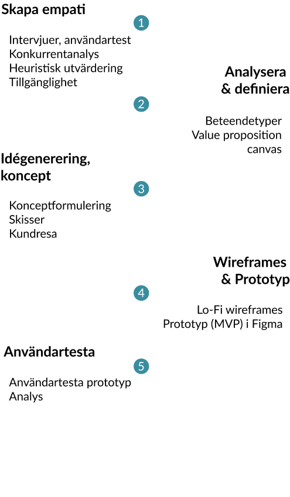

Design
Process
Uppdrag
Förbättra Dustins användardesign av befintlig webbplats.
Design thinking i fem steg
Användartester, UX-review och granskning av webbplatsen visade effektivt vilka områden som behöver förbättras.
Tillsammans med målgruppsanalyser, behovsanalys och Dustins effektmål kunde jag ta fram koncept för nya lösningar och testa dem.
